Problem
Vehicle issues are often described through fragmented symptoms, fault codes and incomplete context.
A full-stack diagnostic platform that combines vehicle data, symptoms, OBD-II / DTC information and adaptive questioning to identify probable causes and guide the user toward a clearer diagnosis.

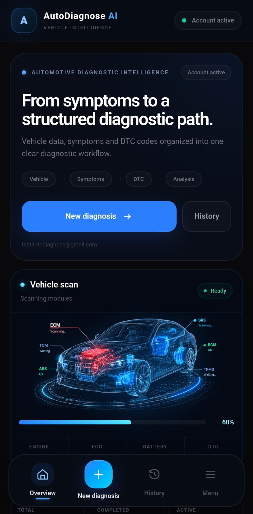
Vehicle issues are often described through fragmented symptoms, fault codes and incomplete context.
Turn those signals into a guided, adaptive diagnostic experience instead of a static form.
A responsive web application with authentication, personal history, diagnostic logic and a mobile-first PWA experience.
Each stage narrows the context before analysis, keeping the experience understandable while gathering the data needed for better diagnostic reasoning.
Make, model, year, engine, fuel type and mileage provide the technical context for the case.
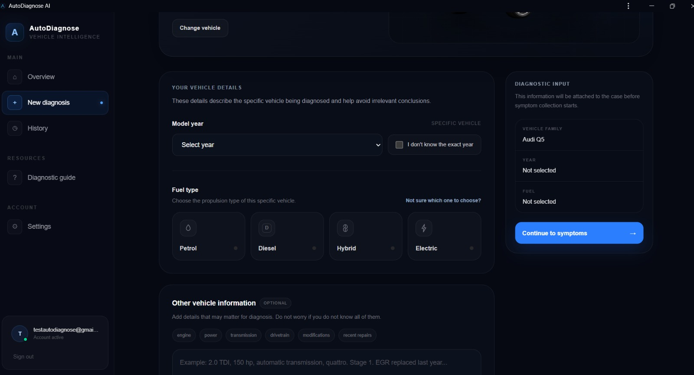
The user can describe multiple symptoms and add OBD-II information instead of relying on a single signal.
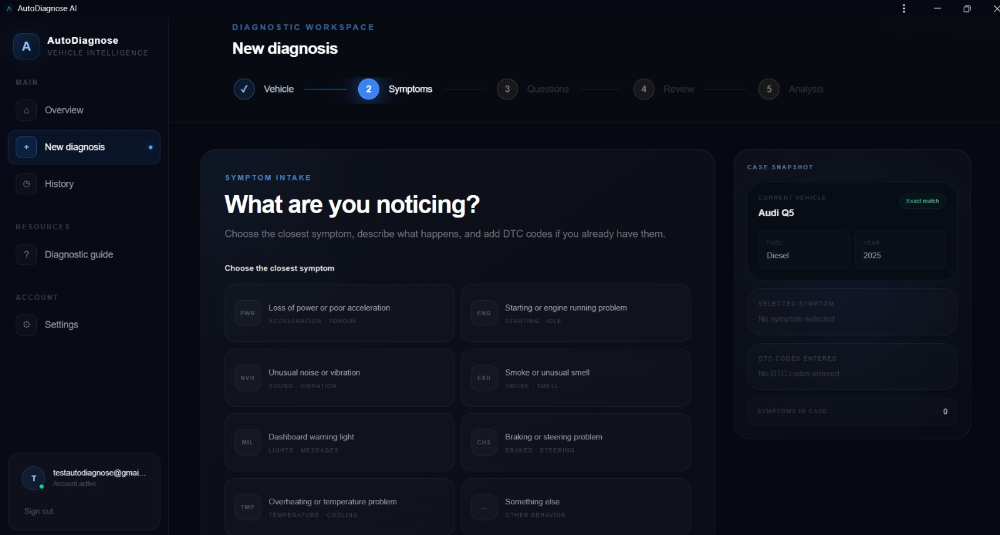
Questions change based on the available context, helping narrow down the diagnostic path.
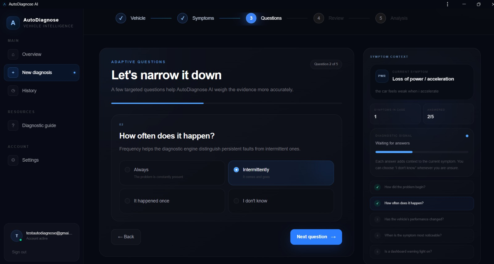
The user can verify the complete diagnostic case before the analysis is performed.
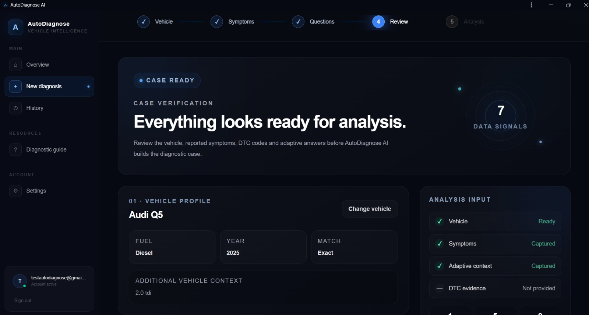
Instead of presenting one absolute answer, the diagnostic engine returns probable causes with confidence scores. This makes the result easier to reason about and leaves room for richer AI-assisted analysis.
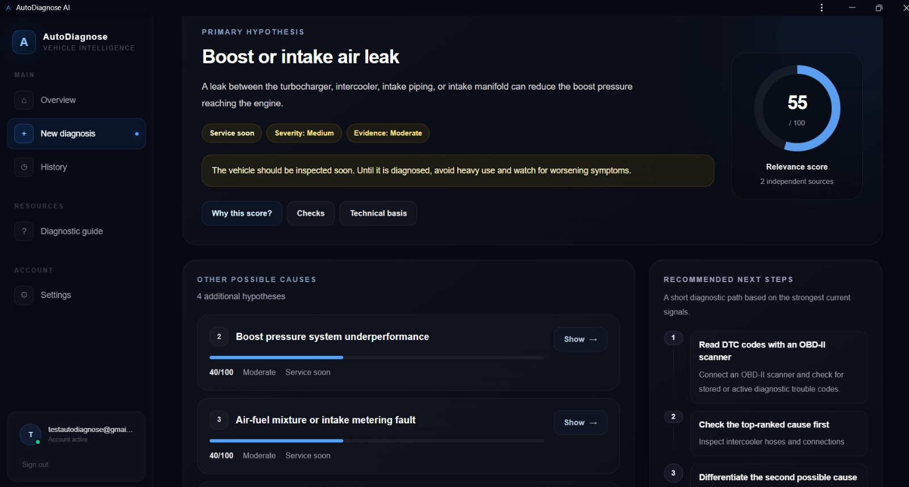
The diagnostic flow sits inside a wider product experience: sessions, account data, history, guidance and settings.
Authenticated users can return to previous diagnostic cases instead of starting from zero each time.
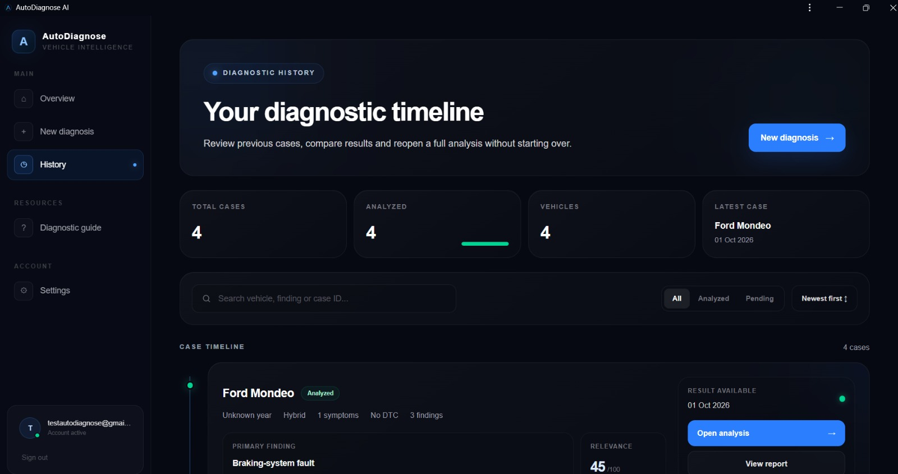
The application includes contextual information so users can understand the process instead of blindly following screens.
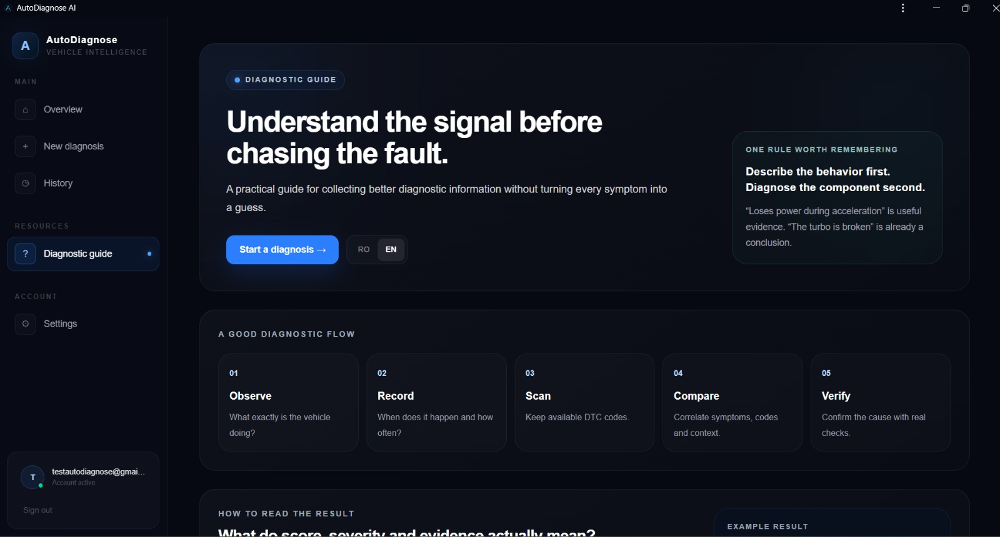
Language, account experience and personal preferences are part of the same product system.
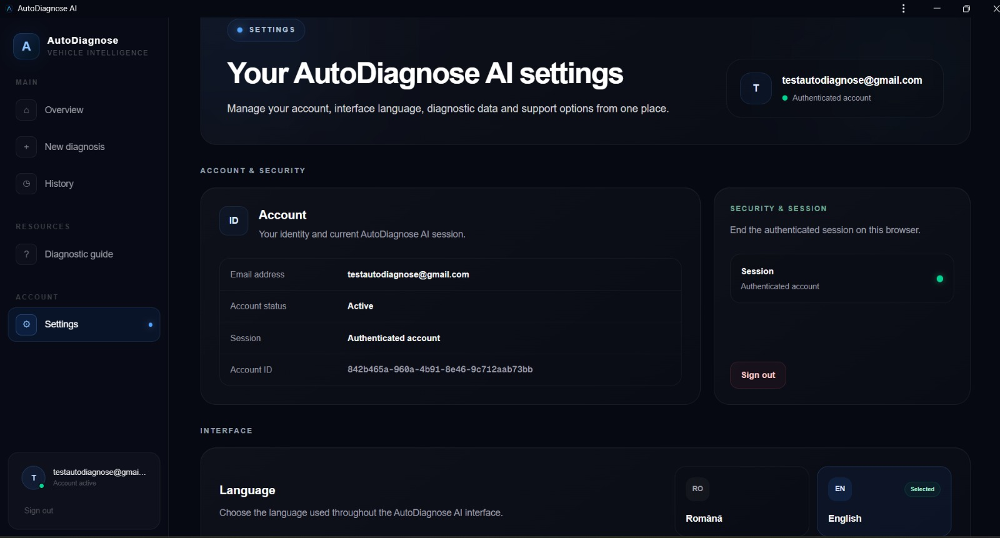
The mobile experience uses a dedicated layout rather than simply shrinking the desktop interface. The product can also be installed as a PWA for a more app-like experience.
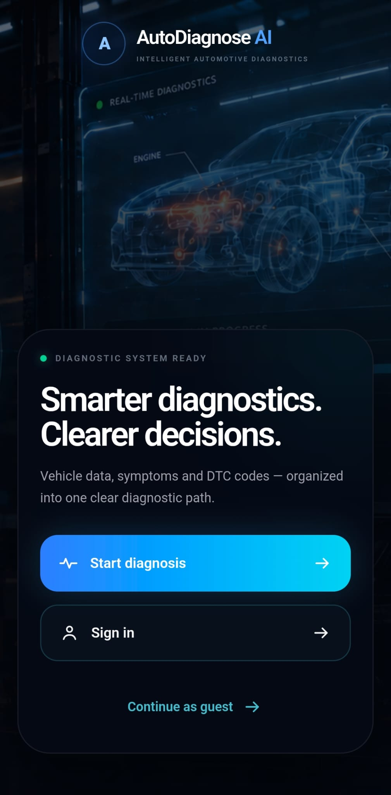
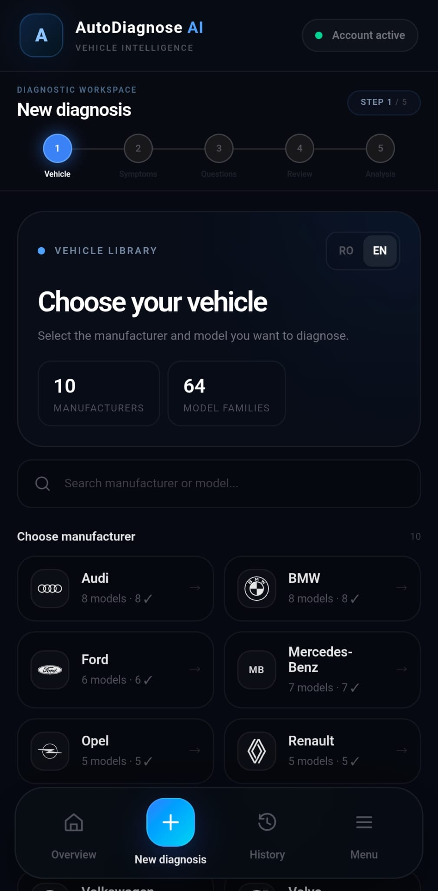
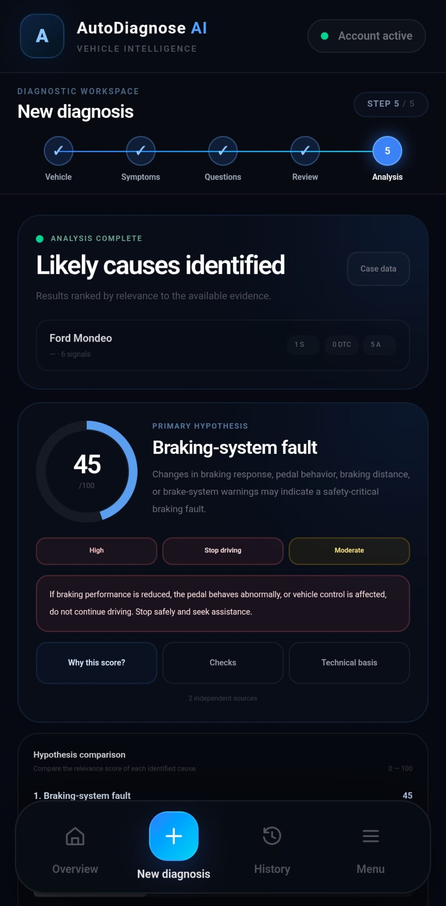
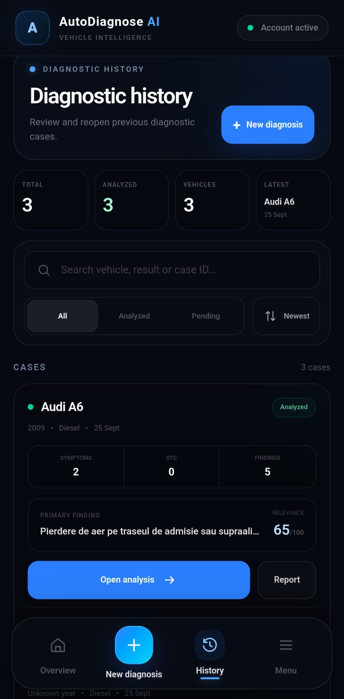
Responsive product flows, stateful diagnosis steps, reusable UI and mobile/PWA behavior.
REST API, user sessions, diagnostic cases, analysis endpoints and application logic.
Diagnostic history, guest sessions, account ownership and persistent case data are handled as part of the same system.
Structured diagnostic reasoning today, with an architecture prepared for richer AI / LLM integration.
AUTO DIAGNOSE AI · FULL-STACK PRODUCT CASE STUDY